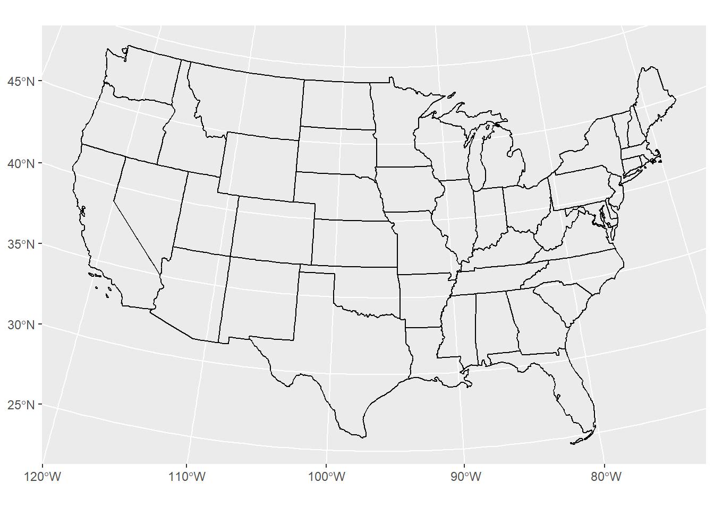
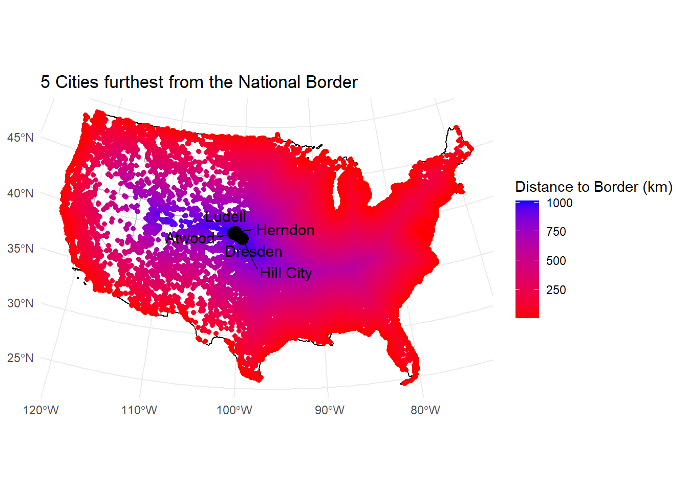

Warning: package 'flextable' was built under R version 4.4.3
Attaching package: 'flextable'
The following object is masked from 'package:purrr':
compose
Question 1
1.1 - Define a Projection
# define projection that preserves distance in CONUSeqdc <-'+proj=eqdc +lat_0=40 +lon_0=-96 +lat_1=20 +lat_2=60 +x_0=0 +y_0=0 +datum=NAD83 +units=m +no_defs'
1.2 - Get USA state boundaries
# load US State BoundariesUS_states <- USAboundaries::us_states(resolution ="low") us_states_sf <- US_states %>%filter(jurisdiction_type =="state") %>%st_transform(crs = eqdc)
ggplot() +geom_sf(data = us_states_sf)
1.3 - Get country boundaries for Mexico, the United States of America, and Canada
# load World Boundariesworld_boundaries <- rnaturalearthdata::countries110
# filter for USA, Mexico, and Canadanorthamerica_boundaries_sf <- world_boundaries %>%filter(name %in%c("United States of America", "Mexico","Canada")) %>%st_transform(crs = eqdc)
2.1 Distance to USA Border (coastline or national, km)
# change to multiline stringusa_boundary <- us_states_sf %>%summarise(geometry =st_union(geometry)) %>%st_cast("MULTILINESTRING")
ggplot() +geom_sf(data = usa_boundary)
# calculate distances to nearest international border or coastlinecity_nationalborder_dist <- city_center_sf %>%mutate(dist_to_bndry =st_distance(., usa_boundary) %>%apply(1, min)) %>%mutate(dist_to_bndry_km = (dist_to_bndry /1000))
# flextable of five cities furthest from international border or coastlineslice_max(city_nationalborder_dist, n =5, order_by = dist_to_bndry_km) %>%select(city, state_name, dist_to_bndry_km) %>%st_drop_geometry() %>%mutate(dist_to_bndry_km =round(dist_to_bndry_km, 1)) %>%flextable() %>%set_caption("Five Cities farthest from a International Border or Coastline") %>%set_header_labels(city ="City",state_name ="State",dist_to_bndry_km ="Distance to nearest international border or coastline (km)")
Five Cities farthest from a International Border or Coastline
City
State
Distance to nearest international border or coastline (km)
Ludell
Kansas
1,012.5
Dresden
Kansas
1,012.4
Herndon
Kansas
1,007.8
Hill City
Kansas
1,005.1
Atwood
Kansas
1,004.7
2.2 - Distance to States (km)
# change to multiline stringus_states_ms <-st_cast(us_states_sf, "MULTILINESTRING")
ggplot() +geom_sf(data = us_states_ms)

# function to calculate nearest distanct to border for the State that the City is incity_stateborder_dist <-function(city_df, state, states_df) { city_distance <- city_df %>%filter(state_name == state) %>%mutate(dist_to_bndry =st_distance(., (states_df %>%filter(state_name == state)) %>%st_geometry()) %>%apply(1, min)) %>%mutate(dist_to_bndry_km = (dist_to_bndry /1000))return(city_distance)}
# nested function to apply to a dataset with cities in more than one Statecalculate_all_distances <-function(city_df, states_df) { unique_states <-unique(city_df$state_name) all_distances <-map_df(unique_states, ~city_stateborder_dist(city_df, .x, states_df),.progress =TRUE)return(all_distances)}
# running the functions on the data setall_distances <-calculate_all_distances(city_center_sf, us_states_ms)
# flextable of five cities furthest from their respective State borderslice_max(all_distances, n =5, order_by = dist_to_bndry_km) %>%select(city, state_name, dist_to_bndry_km) %>%st_drop_geometry() %>%mutate(dist_to_bndry_km =round(dist_to_bndry_km, 1)) %>%flextable() %>%set_caption("Five Cities farthest from a State Border") %>%set_header_labels(city ="City",state_name ="State",dist_to_bndry_km ="Distance to Nearest State Border (km)" )
# calculate distances to border with Mexicomexico_dist <- city_center_sf %>%mutate(dist_to_bndry =st_distance(., mexico_sf) %>%apply(1, min)) %>%mutate(dist_to_bndry_km = (dist_to_bndry /1000))
# flextable of five cities furthest from the border with Mexicoslice_max(mexico_dist, n =5, order_by = dist_to_bndry_km) %>%select(city, state_name, dist_to_bndry_km) %>%st_drop_geometry() %>%mutate(dist_to_bndry_km =round(dist_to_bndry_km, 1)) %>%flextable() %>%set_caption("Five Cities farthest from the border with Mexico") %>%set_header_labels(city ="City",state_name ="State",dist_to_bndry_km ="Distance to Mexican Border (km)")
# calculate distances to border with Canadacanada_dist <- city_center_sf %>%mutate(dist_to_bndry =st_distance(., canada_sf) %>%apply(1, min)) %>%mutate(dist_to_bndry_km = (dist_to_bndry /1000))
# flextable of five cities furthest from the border with Canadaslice_max(canada_dist, n =5, order_by = dist_to_bndry_km) %>%select(city, state_name, dist_to_bndry_km) %>%st_drop_geometry() %>%mutate(dist_to_bndry_km =round(dist_to_bndry_km, 1)) %>%flextable() %>%set_caption("Five Cities farthest from the border with Canada") %>%set_header_labels(city ="City",state_name ="State",dist_to_bndry_km ="Distance to Canadian Border (km)")
Five Cities farthest from the border with Canada
City
State
Distance to Canadian Border (km)
Hawaiian Ocean View
Hawaii
4,151.7
Discovery Harbour
Hawaii
4,150.0
Waiohinu
Hawaii
4,146.5
Naalehu
Hawaii
4,144.8
Pahala
Hawaii
4,127.4
Question 3
3.1 Data
# identify 10 largest cities by populationtop_10_cities <- city_center_sf %>%slice_max(order_by = population, n =10)#plot all borders and the 10 largest citiesggplot() +geom_sf(data = us_states_ms,aes(color ="State Borders")) +geom_sf(data = usa_boundary,aes(color ="US Border"),size =8) +geom_sf(data = canada_sf,aes(color ="Canadian Border"),size =8) +geom_sf(data = mexico_sf,aes(color ="Mexican Border"),size =8) +geom_sf(data = top_10_cities,aes(color ="10 Largest Cities"),size =3) +geom_text_repel(data = top_10_cities, aes(label = city, geometry = geometry), stat ="sf_coordinates", size =4) +scale_color_manual(values =c("US Border"="blue","Canadian Border"="red","Mexican Border"="green","State Borders"="gray" ), name ="Borders") +labs(title ="10 Largest Cities in the US",x =NULL, y =NULL) +theme_minimal()
3.2 City Distance from the Border
top_5_int_dist <- city_nationalborder_dist %>%slice_max(order_by = dist_to_bndry_km, n =5)ggplot() +geom_sf(data = us_states_ms,color ="gray") +geom_sf(data = usa_boundary,color ="black",size =8) +geom_sf(data = city_nationalborder_dist,aes(color = dist_to_bndry_km)) +geom_sf(data = top_5_int_dist,color ="black",size =4) +geom_text_repel(data = top_5_int_dist, aes(label = city, geometry = geometry), stat ="sf_coordinates", size =4) +scale_color_gradient(low ="red", high ="blue") +labs(title ="5 Cities furthest from the National Border",x =NULL, y =NULL, color ="Distance to Border (km)") +theme_minimal()

3.3 City Distance from Nearest State
top_5_state_dist <- all_distances %>%slice_max(order_by = dist_to_bndry_km, n =5)ggplot() +geom_sf(data = us_states_ms,color ="gray") +geom_sf(data = usa_boundary,color ="black",size =8) +geom_sf(data = all_distances,aes(color = dist_to_bndry_km)) +geom_sf(data = top_5_state_dist,color ="black",size =4) +geom_text_repel(data = top_5_state_dist, aes(label = city, geometry = geometry), stat ="sf_coordinates", size =4) +scale_color_gradient(low ="red", high ="blue") +labs(title ="5 Cities furthest from a State Border",x =NULL, y =NULL, color ="Distance to Border (km)") +theme_minimal()
3.4 Equidistance boundary from Mexico and Canada
canada_mexico_city_dist <- canada_dist %>%st_join(select(mexico_dist, dist_to_mexico = dist_to_bndry_km), by ="id")
top_5_can_mex <- canada_mexico_city_dist %>%filter(abs(dist_to_bndry_km - dist_to_mexico) <=100) %>%slice_max(order_by = population, n =5)ggplot() +geom_sf(data = us_states_ms,color ="gray") +geom_sf(data = usa_boundary,color ="black",size =8) +geom_sf(data = canada_mexico_city_dist,color ="blue") +gghighlight(abs(dist_to_bndry_km - dist_to_mexico) <=100) +geom_sf(data = top_5_can_mex,color ="black",size =4) +geom_text_repel(data = top_5_can_mex, aes(label = city, geometry = geometry), stat ="sf_coordinates", size =4,fontface ="bold") +labs(title ="Cities with equal distances to Canada and Mexico (+/- 100km)",subtitle ="Top 5 Cities by Population are labeled",x =NULL, y =NULL) +theme_minimal()
Warning: Could not calculate the predicate for layer 1, layer 2; ignored
# Transpose and include row names as a columncity_summary_transposed <-data.frame(Metric =c("Number of Cities", "Total Population", "Percent of USA Population"),Value =as.numeric(t(city_summary)))# Create the flextableflextable(city_summary_transposed) %>%set_caption("Summary of City and Population within 100mi of External Boundary") %>%set_header_labels(Metric ="Metric",Value ="Value" ) %>%colformat_double(digits =0)
Summary of City and Population within 100mi of External Boundary
Metric
Value
Number of Cities
13,611
Total Population
253,022,385
Percent of USA Population
64
The population and percent of USA population estimated by the ACLU is similar to these values, they estimated 200 million people and 2/3 of the USA population.
4.2 Mapping Border Zone
top_10_border_dist <- city_nationalborder_dist %>%filter(dist_to_bndry_km <=160) %>%slice_max(order_by = population, n =10)city_nationalborder_dist <- city_nationalborder_dist %>%mutate(dist_to_bndry_mi = dist_to_bndry_km *0.621371)ggplot() +geom_sf(data = us_states_ms,color ="gray") +geom_sf(data = usa_boundary,color ="black",size =8) +geom_sf(data = city_nationalborder_dist,aes(color = dist_to_bndry_km *0.621371)) +gghighlight(dist_to_bndry_km <=160) +geom_sf(data = top_10_border_dist,color ="black",size =4) +geom_text_repel(data = top_10_border_dist, aes(label = city, geometry = geometry), stat ="sf_coordinates", size =4) +scale_color_gradient(low ="darkred", high ="orange") +labs(title ="THE DANGER ZONE: 10 Most Populous Cities within 100 mi of the National Border",x =NULL, y =NULL, color ="City Center distance to Border (mi)") +theme_minimal()
Warning: Could not calculate the predicate for layer 1, layer 2; ignored
4.3 Instead of labeling the 10 most populous cites, label the most populous city in each state within the Danger Zone
most_pop_cty <- city_nationalborder_dist %>%filter(dist_to_bndry_km <=160) %>%group_by(state_name) %>%slice_max(order_by = population, n =1) %>%ungroup()city_nationalborder_dist <- city_nationalborder_dist %>%mutate(dist_to_bndry_mi = dist_to_bndry_km *0.621371)ggplot() +geom_sf(data = us_states_ms,color ="gray") +geom_sf(data = usa_boundary,color ="black",size =8) +geom_sf(data = city_nationalborder_dist,aes(color = dist_to_bndry_km *0.621371)) +gghighlight(dist_to_bndry_km <=160) +geom_sf(data = most_pop_cty,color ="black",size =4) +geom_text_repel(data = most_pop_cty, aes(label = city, geometry = geometry), stat ="sf_coordinates", size =4) +scale_color_gradient(low ="darkred", high ="orange") +labs(title ="THE DANGER ZONE: Most Populous City within 100 mi of the National Border from each State",x =NULL, y =NULL, color ="City Center distance to Border (mi)") +theme_minimal()
Warning: Could not calculate the predicate for layer 1, layer 2; ignored
Warning: ggrepel: 23 unlabeled data points (too many overlaps). Consider
increasing max.overlaps